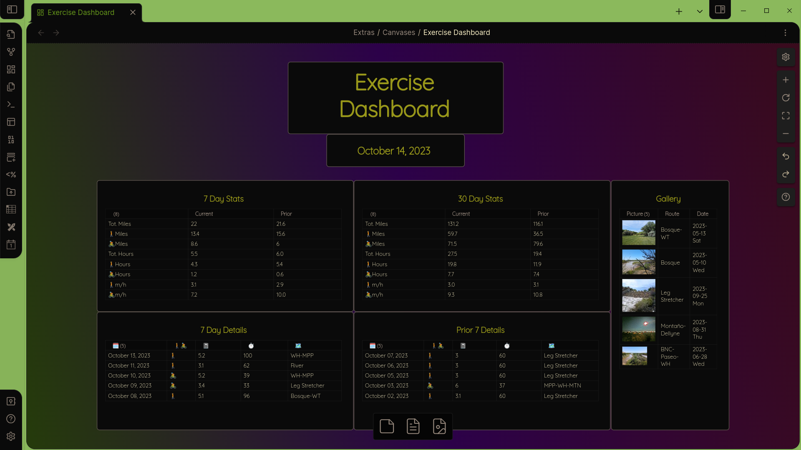
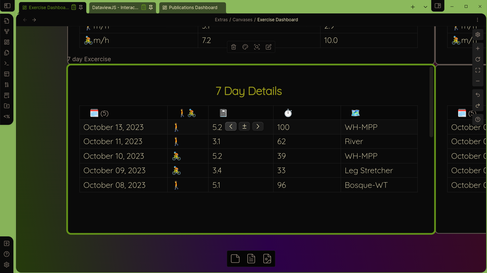

Interactive Tables with DataviewJS

Introduction
This article is a follow-up to my Gentle Introduction to DataviewJS articles, and assumes that you have read them. It is written for anglers, but if you just want the fish you can Tldr; your way to the bottom an just grab the code. Even if you are here to learn how to fish, depending on your learning style, you may want to take a look at the complete code first before this walk-through.
We are now ready to start building a fully dynamic and interactive dashboard to manage the exercise logs. In this case, I’m tracking the following:
- type of activity
- distance
- duration
- date of activity
- route
I have optional fields for notes and, as you can see, for images. Summary tables are generated using calculated values. The entire canvas updates automatically to the current day.
This example could easily be extended for tracking anything which includes numerical data and images. Imagine a research project, for example, where observations are taken combining numerical data, textual observations, and photos. Actually creating the log entries, thanks to Metadata Menu and Unique Notes, takes almost no time. You can read about how to do this here.
In this article, I’ll focus on creating this dynamic table.

Appropriate widgets are provided allowing for direct editing or the use of popup modals for multi-select fields and dates. The list will display all logs over the last 7 days, so different logs will appear depending on the day.
To do this, we will use the excellent JavaScript functionality provided by Metadata Menu. It would be more interesting were you to create a bunch of logs (notes) covering a date range of at least three months and follow along. They should all contain the following fields:
- topic
- type
- Route
- Activity
- Duration
- Distance
- Note
- Image
- Link
Time Math
Throughout this dashboard I work with time. It is natural to want to look at time periods of weeks and months, and to compare current periods to prior periods of the same length. We, just as naturally, compare a week starting Monday or Sunday to a prior week starting on the same day. And we compare February to January. This is often a good thing, because it fits the way people naturally think.
But if you are really looking at the numbers, you quickly see the flaw in comparing time periods this way. You can’t compare a complete week to the prior week until the end of the week. To get around this, people use week-to-date, or quite commonly month-to-date. For months the problem is worse, as in the case of Feb/Jan comparison that’s 28 days compared to 31 days. That’s more than a 10% difference in days, and therefor in data!
A simple way around this, and one which provides better analysis, is to use rolling windows of time. Any seven day period contains every day of the week, and so comparing two of any such periods valid (and complete) week-to-week comparisons. For months, you can compare any 30 (or 28) day period to the prior period of equal length, so you get a full, month-long picture with apples-to-apples data (that’s a technical term😉).
In the first article I introduced moment(), an object provided by Dataview (by MomentJS actually). This makes time math easy. moment() itself means today, now, this very second. If you want the date/time two days ago, you can subtract two days with moment().subtract(2, "days"). I’ll leave it as an exercise to the reader to figure out how to find the date two months ago.
In order to use moment() for any date other than now, you need to write, eg., moment(new Date("2023-10-20"). We will do this so that we can format the date differently using the format() function in moment(). format() wants an argument, a date format string. I don’t need to see the year, and a 2-digit month is fine and shorter. On the other hand, seeing the day of the week would be useful. The format string to produce “10/10 Tue” is “MM/DD ddd”. ### Challenge As an exercise, you might pause here and think about how to display “two days ago” in the format “10/10 Tue”. You have all the knowledge you need. Think about chaining commands together with the period. ### Solution
Here is a solution:
const dateFormat = "MM/DD ddd" const twoDaysAgo =
moment() .subtract(2, "days") .format(dateFormat)
dv.paragraph(twoDaysAgo)When writing, and especially reading, code, formatting is important. I could have written
const twoDaysAgo = moment().subtract(2, "days").format(dateFormat)but it is much less clear what is going on. If you are trying to understand a piece of code, start by reformatting. ## Asynchronous Functions
Most computer programs execute line by line, with each line completing before moving on to the next line. Normally this is what you want. However, as the quantity of data commonly worked with increases geometrically, and the fact that it is often distributed widely across the internet, applications which require fetching data can easily grind to a halt due to a slow internet connection, slow servers, large quantities, etc. To overcome this problems, some functions are executed asynchronously. When an asynchronous function is executed, it doesn’t return the actual data. Instead, it returns what is called a promise. That allows the program to continue executing while the data is being fetched. It will continue execution until the data is actually required, at which point it will wait (not freeze).
In practice this is quite easy, involving the use of two new key words: async and await. The first, async, is added to the function definition, and the second, await, is added before any data fetching. That’s all you need to know so that you will understand the words when you see them.
The Table
Now, lets finally take a look at the entire code that creates the dashboard. Take some time to read through it. Everything should be understandable at this point.
const {fieldModifier: f} =
this.app.plugins.plugins\["metadata-menu"\].api
const dateFormat = "MM/DD ddd"
dv.header(3, "7 Day Details")
dv.table(\["🗓️","🚶🚴", "📓", "⏱️", "🗺️"\],
await Promise.all(dv.pages()
.where(b => b.type == "log")
.where(b => b.ActivityDate >= moment().subtract(7, "days"))
.sort(p => p.ActivityDate, "desc")
.map(async b=>[
moment(new Date(b.ActivityDate)).format(dateFormat),
await f(dv, b, "Activity"),
await f(dv, b, "Distance"),
await f(dv, b, "Duration"),
await f(dv, b, "Route"),
]
)
)Next Steps
In the next article I will explain how to generate summary information like totals and averages for display on the dashboard. In the mean time I strongly suggest that you do two things:
- Add images to some of your logs and create the table for the Gallery section of the dashboard
- Turn some of your existing Dataview tables into DataviewJS tables. Or, at least, make some new ones from your own information
- Spend some time working with date ranges. In this example, we selected the past seven days. How can you select the seven days prior to that? (Hint: you need to chain together two
where()clauses.) - Can you create a month-to-date view? There are various ways to do it, but it’s helpful to know that you can do
moment().startOf('month')to grab the first day of the month. Check out the documentation for more possibilities.
Happy coding!